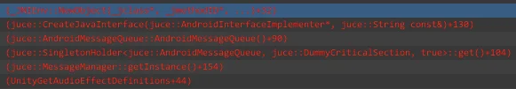

Introduction
This time, let's talk about building JUCE plugins for Android Unity projects. I'll show you how to enable Unity plugin builds for Android in JUCE using CMake. Furthermore, I will present a native message queue implementation for your Android plugin that can replace the default JNI-based implementation in JUCE, which has the unfortunate side effect of crashing Unity applications.
Update: I have written a new article on this topic. The only relevant part of this article that remains useful is the section on how to enable Unity plugin builds in JUCE with CMake. I have found a better solution for the Android message queue problem. You can find the new article here.
Enabling Unity plugin builds in JUCE with CMake
Creating an Android dynamic library for Unity is quite simple. Although JUCE does not officially support the Unity wrapper on mobile platforms, it's easy to enable it. Let's see how:
Pre-requisites:
- Unity installed with Android build support (or you could use any other Android NDK distribution)
- CMake
Steps:
- Enable
Unityplugin format inextras/Build/CMake/JUCEModuleSupport.cmake:
if(CMAKE_SYSTEM_NAME STREQUAL "iOS" OR CMAKE_SYSTEM_NAME STREQUAL "Android")
list(APPEND result Unity)
endif()
The name of the plugin should start with
audioplugin_to be recognized by Unity. Thanks for the tip, Cymatic!I use the NDK toolchain that comes with Unity, so I set the following environment variables when running the CMake generator:
-DCMAKE_SYSTEM_NAME=Android -DCMAKE_TOOLCHAIN_FILE=/Applications/Unity/Hub/Editor/<Your Unity editor version>/PlaybackEngines/AndroidPlayer/NDK/build/cmake/android.toolchain.cmake
That's all! The generated project will now include the Unity plugin format. You can build your JUCE plugin as usual and use the generated .so file in your Unity project.
Replacing the Android Message Queue Implementation in JUCE
However, there is a catch. The default JUCE message queue implementation for Android is based on JNI, which does not work out of the box and crashes the app when it initially loads the plugin with this stack trace:

Unity does have a JNI interface called AndroidJNI, which could expose the NewObject method. However, it's challenging to figure out if it's feasible to invoke this from the native domain somehow before any gameplay code gets executed. Therefore, I decided to implement a native message queue for Android in my JUCE plugin. Behold:
struct AndroidMessageQueue {
JUCE_DECLARE_SINGLETON_SINGLETHREADED (AndroidMessageQueue, true)
AndroidMessageQueue() : quitFlag(false) {
messageThread = std::thread(&AndroidMessageQueue::processMessages, this);
}
~AndroidMessageQueue() {
JUCE_ASSERT_MESSAGE_THREAD
quitFlag = true;
cv.notify_one();
messageThread.join();
}
bool post(MessageManager::MessageBase::Ptr&& message) {
if (! quitFlag) {
queue.add(message);
std::lock_guard<std::mutex> lock(cv_m);
cv.notify_one();
return true;
}
return false;
}
private:
void processMessages() {
while (! quitFlag) {
std::unique_lock<std::mutex> lock(cv_m);
cv.wait(lock, [this] { return ! queue.isEmpty() || quitFlag; });
while (! queue.isEmpty()) {
auto message = queue.removeAndReturn(0);
if (message != nullptr)
message->messageCallback();
}
}
}
ReferenceCountedArray<MessageManager::MessageBase, CriticalSection> queue;
std::condition_variable cv;
std::mutex cv_m;
std::thread messageThread;
std::atomic<bool> quitFlag;
};
JUCE_IMPLEMENT_SINGLETON (AndroidMessageQueue)
This implementation should replace the original AndroidMessageQueue struct in modules/juce_events/native/juce_Messaging_android.cpp.
The AndroidMessageQueue class is a singleton that runs a separate thread to process messages. It uses a condition variable to signal the message thread when a new message is posted. The post method is used to post a message to the queue, and the processMessages method is the message thread's main loop. It integrates seamlessly with the JUCE message manager, so it's quite easy to use.
I am yet to stress-test this implementation, but it seems to work fine in my initial tests. Can you think of a more efficient way to implement this? I'd be happy to hear your thoughts.
Demo Project
Would you like to see this implementation in action?
I have developed a simple Unity project that incorporates a JUCE plugin for Android. Access it here.
The source code for the synth plugin utilized in this Unity project is available here.
Curious about the modifications made to JUCE? Explore my customized fork of the JUCE framework here.
Conclusion
In this article, I showed you how to build JUCE plugins for Android Unity projects. An example project is available for you to try out. Let me know if you have any questions or suggestions.
I am excited about this development as it can open up many possibilities for game audio developers targeting Android devices, such as the Meta Quest headsets.